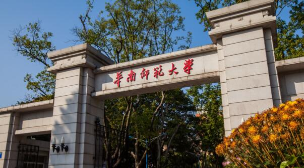

教育部教育信息化专家组实地指导化专家组实地指导化专家组实地指导
2016-3-15 来源：学校 作者：小明

今天，是专属你们的盛大节日；今天的毕业典礼，是专属你们的荣耀时刻。学成毕业，对青年学生有特别意义。今年，学校一改往年毕业典礼的形式，以进一步彰显大学对学生应有的重视、对知识应有的尊重、对学术应有的敬仰。 你们是学校第一届全体身着学位服参加毕业典礼的毕业生。这份仪式感、庄重感和荣誉感，应该属于在这个校园里努力奋斗、学有所成的你们。 你们是学校第一届在富有历史感的“九一二”操场参加毕业典礼的毕业生。这里，南有苍翠的珞珈山，北有浩渺的东湖水；这里，不仅见证了武大风云际会的历史，也留下你们太多的青春回忆。